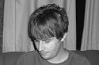
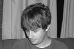

Who Are They?
Music
They play violin, tin whistle, guitar and bodhrán, as well as vocals. They play traditional Irish tunes and songs, as well as covers of artists such as The Pogues, Van Morrison, Oasis and Sawdoctors, and other songs on request. An increasing number of our their songs are available too, with lyrics written by Manchester poet Mike Duff. A demo album is currently in production.
Band Members
There are three core members of The Rossoneri: Rob, Jenny and Phil. They are based in the Chorlton, Eccles and Sale parts of Greater Manchester respectively.

 

Instruments Played by the Band
See below for more information on the instruments played by The Rossoneri and how they use them.

Vocals
Lead — RobBackground — Phil, Jenny
Rob takes the lead vocals in his stride, accompanying himself on guitar. Phil offers harmony while adding extra rhythm on the bodhrán or between verses on whistles. Jenny is tied to the violin so doesn't get to sing on stage much!
Go back to list of instruments

Violin — Jenny
This is one of the most well known, versatile instruments ever made. Searing or sweet melodies, stabbing or sublime accompaniment, all of the above can be played. Note here the instrument is referred to as a violin and not a fiddle, due to the playing technique used in The Rossoneri.
Go back to list of instruments

Whistles — Phil
Tin Whistles (several keys)Low Whistles (several other keys)
The tin whistle offers simple and more demanding melodies at a quick tempo, and is often used to accompany or harmonise with the vocal melody. The low whistle is pitched an octave lower and plays a haunting, deep sound, and is particularly effective at slow airs.
Go back to list of instruments

Bodhrán — Phil, Rob
The Irish frame drum, pronounced 'bow-rahn' or 'borrun' or 'borran.' Its name comes from the Irish word for 'deaf.' It provides a powerful rhythm to fast and medium paced tunes and songs, and has a surprising pitch range when the temperature of the drum and room allow. It is played with a tipper (beater), a brush, or bare hands.
Go back to list of instruments
Guitar — Rob
The standard accompaniment instrument, played here with a pleasing range of dynamics and passion. Usually strummed in The Rossoneri. Rob plays a right-handed guitar but he is actually left-handed.
Go back to list of instruments